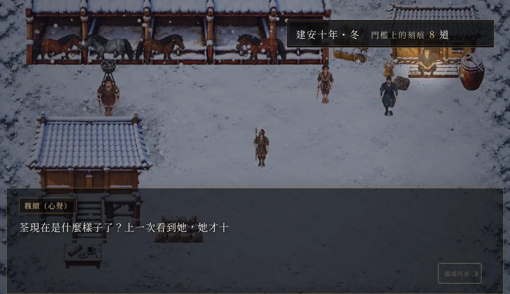
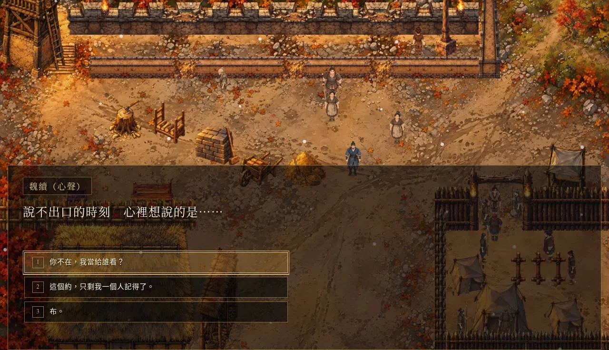
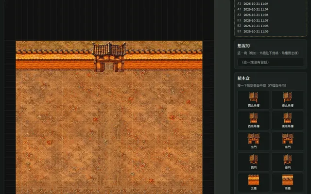
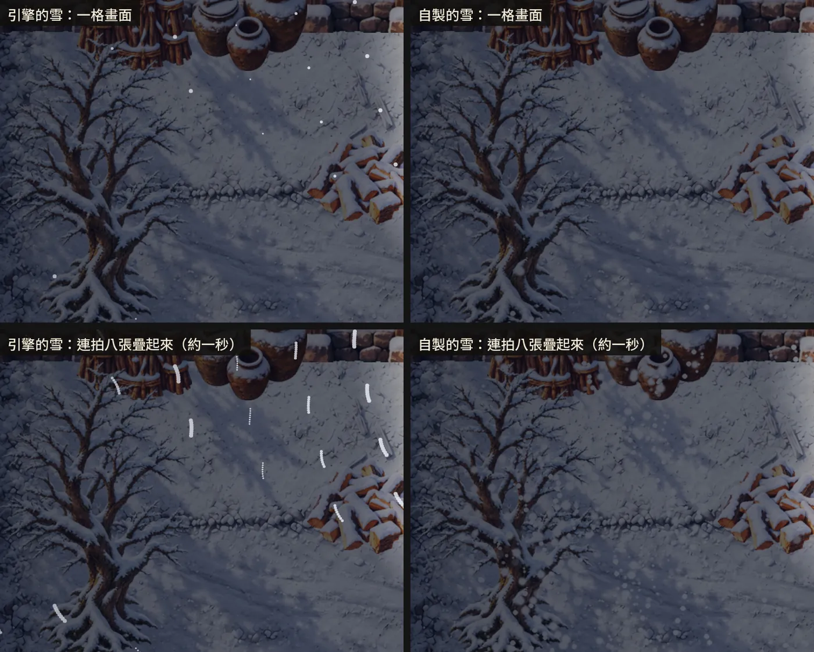
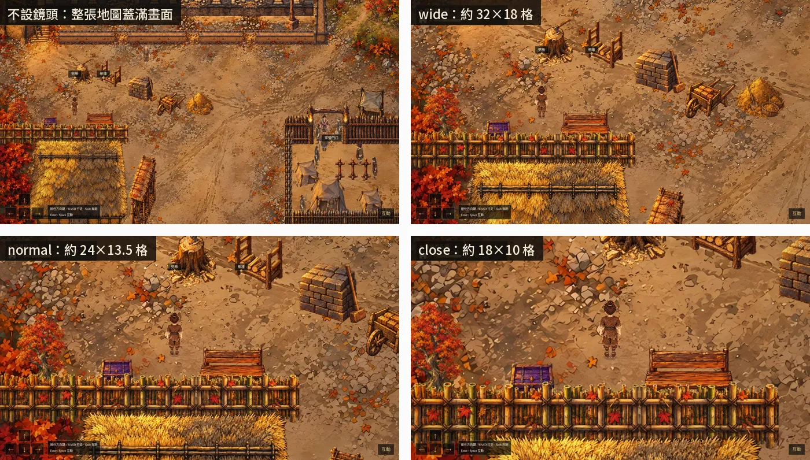

仙泉．香布纏．續 製作手記
《仙泉．香布纏．續》是一部 Larch RPG：《仙泉．香布纏》的同一段故事，換成魏續的眼睛，從五原（西元 173 年）走到谷口那碗水（223 年），最後玩家替他選喝或不喝。
這個站記的是它怎麼做出來的。2026-10-05 寫下第一份設計草稿，到 10-21 為止，xu/ 底下有 429 個提交，分在 15 天裡。點子、方向、每一個要不要做、每一條驗收標準是我定的；程式、產圖、量測、測試都是 AI 做的。每一章寫用了哪些技巧、試過哪些技術、哪些留下、哪些丟掉、為什麼，產圖的提示詞和指令照原樣放上來，照著可以重做一遍。
想用 AI 做 RPG、畫地圖、做角色走路圖的人，可以從感興趣的那章開始看。史料考證、原作的劇本與 CG、原聲帶在原作《仙泉．香布纏》的站：https://yazelin.github.io/larch-buchan-canon/

一個人跟 AI 怎麼做完一部 RPG整部交給 AI 做到可玩、怎麼驗收、自動玩家、試玩回饋怎麼處理
劇本與心聲審稿閘門、準則每一條怎麼來的、心聲語氣、被退回的寫法 CG在場角色定錨、手的左右、多人臉跑掉、給我看之前的清單
CG在場角色定錨、手的左右、多人臉跑掉、給我看之前的清單
 建城工法：拼出來的城地點表、連結圖、配置、九宮格牆、城牆一圈、影子，一件一件拼的第一套
建城工法：拼出來的城地點表、連結圖、配置、九宮格牆、城牆一圈、影子，一件一件拼的第一套
 走進原畫整張畫當地圖、AI 綠底剪遮擋層、試過七版畫法，現在用的做法
走進原畫整張畫當地圖、AI 綠底剪遮擋層、試過七版畫法，現在用的做法

給我按的確認頁地點表、連結圖、五原配置、城邊積木、牆與門、畫風試做的存檔
配樂、音效與天氣光影配樂、下雪、會動的火、光影
Larch RPG 引擎實測地圖大小、一格一個事件、路過的人、換圖，實測到的限制與繞法《續》還在做。地圖正在整個重做，走進原畫那一章是現在進行中的部分。